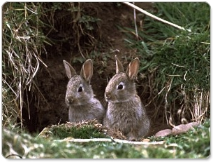

Králíci divocí jsou společenská zvířata. Žijí v koloniích tvořených jednotlivými rodinami. Králičí rodina společně obývá jednu noru či systém nor a tvoří ji samec, jedna či více samic a mláďata. V kolonii panuje hierarchie, dominantní samci osidlují nejbezpečnější nory ve středu kolonie a páří se s více samicemi. Ostatní rodiny žijící na kraji kolonie jsou monogamní. V přehuštěných koloniích se stává, že dominantní samci odmítají své soky k rozmnožování pustit. Jednotlivé rodiny mají v rámci kolonie svá teritoria, tvořená norou a jejím okolím. Značkují si je močí a sekretem pachových žláz. Na území kolonie si králíci budují nory, které mohou být vzájemně propojené. Nory nejsou příliš hluboké, ale tvoří pod zemí rozvětvený labyrint s únikovými východy a větracími šachtami. Pokud má králice mláďata a musí na čas opustit noru, pak její vchod ucpe zátkou z trávy a listů. Všichni králíci v kolonii odkládají trus na oddělené místo, jakousi latrínu. Králíci mají bystré smysly, hlavně sluch a zrak. V nebezpečí divocí králíci varují dupáním zadníma nohama.

Králíci jsou býložraví. Přes léto se živí zelenými částmi rostlin, trávou, hlízami a oddenky. V zimním období s oblibou loupe kůru stromů a keřů. Proto může způsobit značné škody v lesních porostech i ovocných sadech poblíž kolonie. Zvláště obtížní mohou být králíci ve vinohradech.